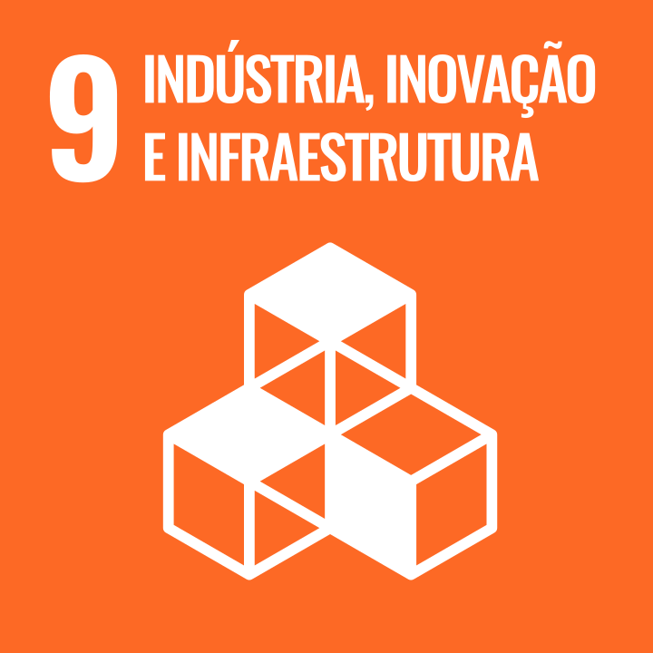

Resumo
Estudante de Engenharia de Computação na UTFPR do campus de Cornélio Procópio.
Princiais interesses são: Sistemas embarcados, Visão computacional e IoT.
ODS que pretendo contribuir

Habilidades
- Experiencia com liderança e gerenciamento de projetos
- Criatividade
- Java
- Git/GitHub
Educação
- Graduação em Engenharia da Computação
- Universidade Tecnológica Federal do Paraná - Cornélio Procópio - PR
- 2023 - Previsão 2027
- Curso de inglês avançado superior
- CCAA - Nova Esperança - PR
- 2016 - 2022
Hobbies
- Surf
- Musica
- Jogos
- Modelagem 3D/Arte digital
Links Adicionais
- GitHub: Perfil do GitHub